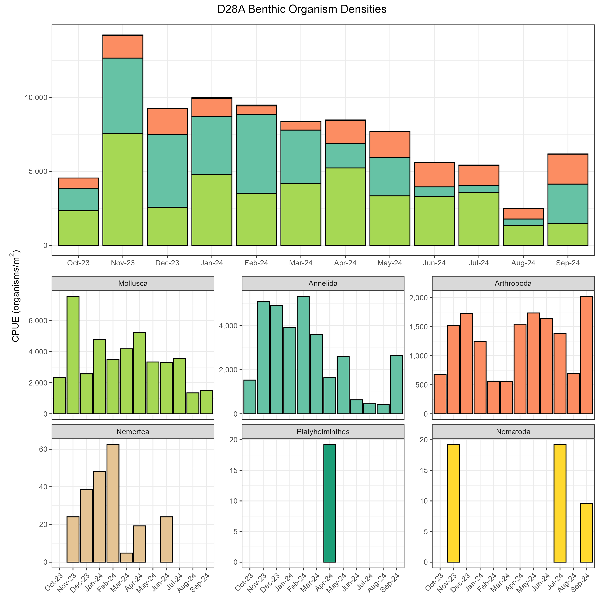
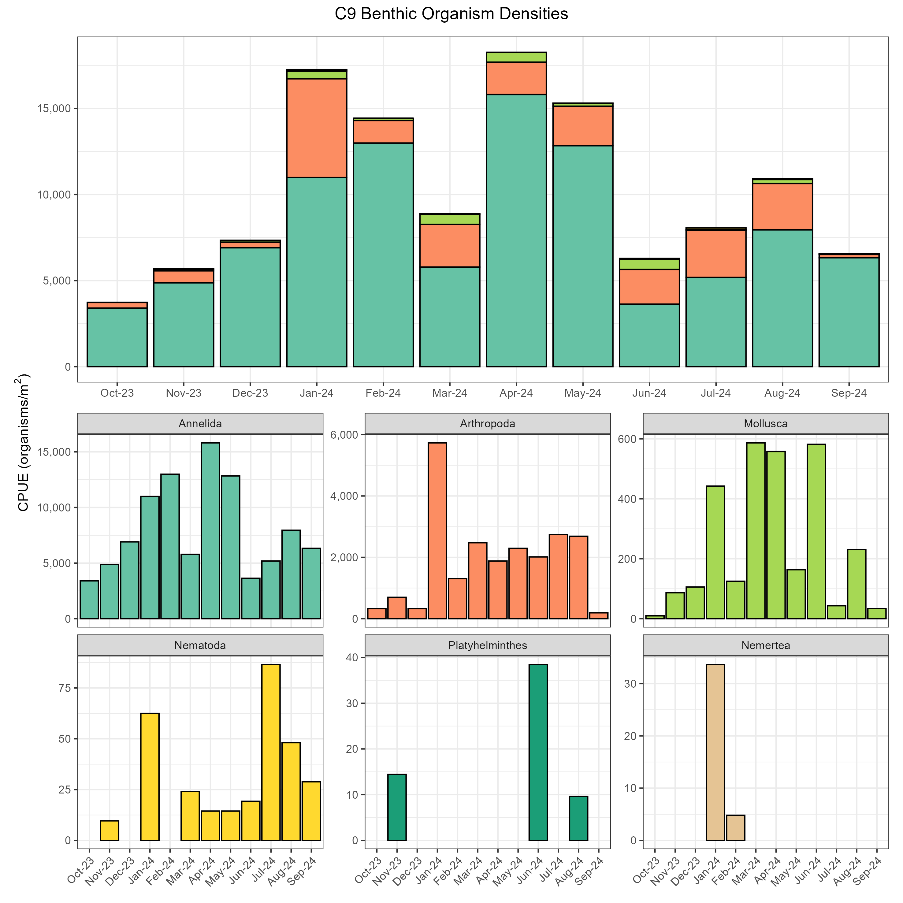
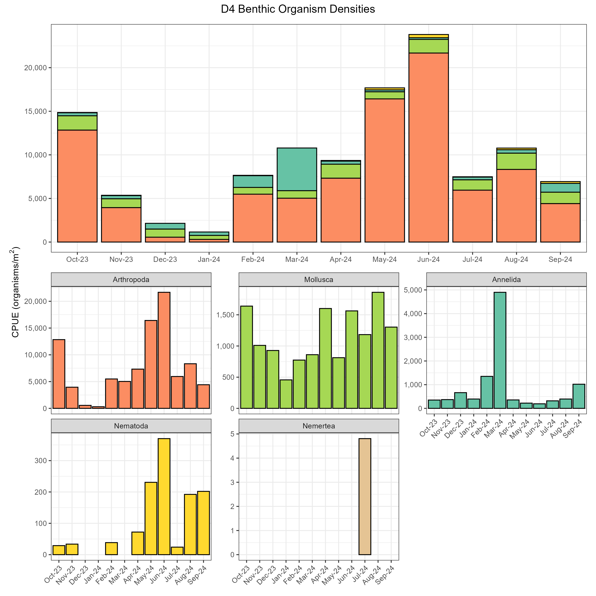
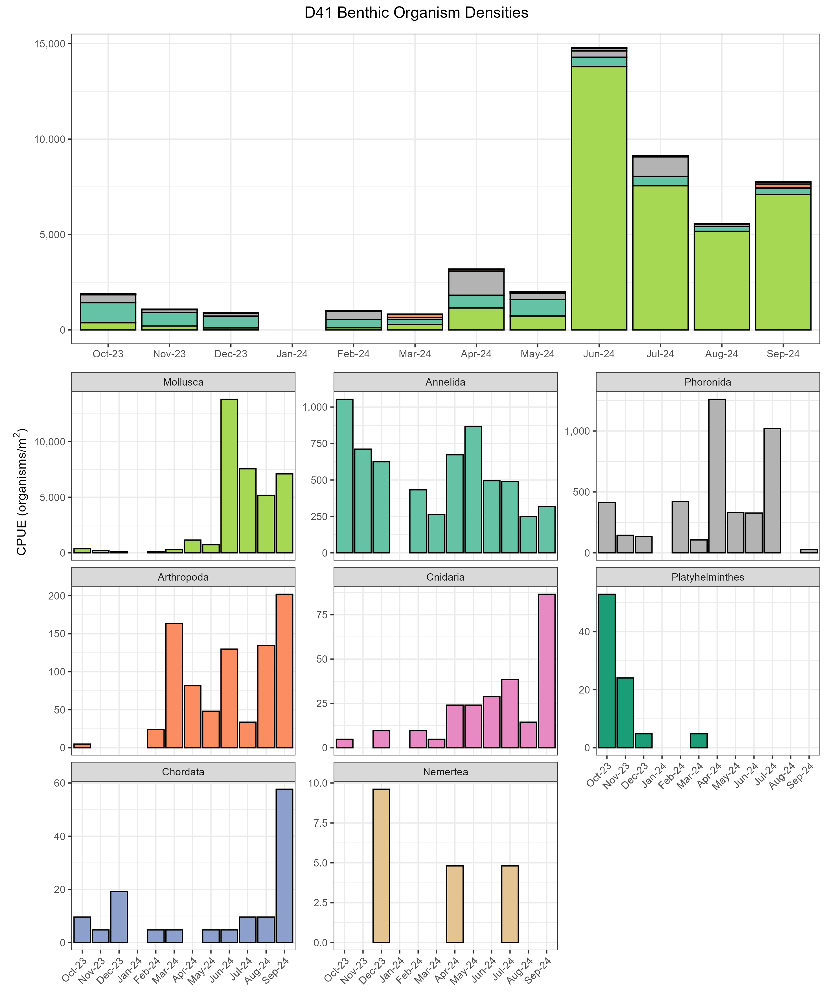

Benthic Invertebrates Report
Introduction
Benthic monitoring conducted by the California Department of Water Resources (DWR) since 1975 has documented changes in the composition, density, and distribution of the macrobenthic biota inhabiting the upper San Francisco Estuary. This monitoring is performed by the Environmental Monitoring Program (EMP) as part of the Interagency Ecological Program (IEP) and is one component of the biological monitoring mandated by Water Right Decision D-1641. Since benthic species respond to changes in physical factors such as freshwater inflows, salinity, and substrate composition, benthic community data provides an indication of physical changes occurring within the Estuary. Benthic monitoring is an important component of the EMP because operation of the State Water Project can change the Estuary’s flow characteristics, affecting the density and distribution of benthic biota. Benthic monitoring data is also used to detect and document the presence of new, non-native species in the Upper Estuary, such as the 1986 arrival and subsequent wide spread of the overbite clam, Potamocorbula amurensis. This article summarizes benthic community characteristics at EMP monitoring sites in Water Year 2024 (October 1st 2023 through September 30th 2024) which was classified as above normal in the Sacramento and San Joaquin Valleys (source). It contextualizes these observations using community data from the preceding decade.
Methods
Benthic monitoring was conducted monthly at 10 sampling sites distributed throughout the Estuary, from San Pablo Bay upstream through the Sacramento-San Joaquin Delta (Figure 1; Table 1). EMP staff collected four bottom grab samples at each station using a Ponar dredge with a sampling area of 0.052 m2. The four replicate grab samples were analyzed for benthic macrofauna by Logical Zoology, a private laboratory under contract with DWR. All organisms were identified to the lowest taxon possible and enumerated.
| Region | WY Index | Stations |
|---|---|---|
| Carquinez | Sacramento | NZ002, NZ004 |
| Central Delta | San Joaquin | D16, D19, D26, D28A |
| Confluence | Sacramento | D4, D10, D12, D22 |
| North Delta | Sacramento | C3A, NZ068 |
| San Pablo Bay | Sacramento | D41, D41A, NZ325 |
| South Delta | San Joaquin | C9, C10A, MD10A, P8 |
| Suisun and Grizzly Bays | Sacramento | D6, D7, D8 |
| Suisun Marsh | Sacramento | NZ032, NZS42 |
The 10 most common genera were determined by summing the normalized organism counts across all stations and months for each genus. For the bar graphs, the data is reported as the average organism catch per unit effort (CPUE). This was calculated as the organism count per replicate grab, converted to organisms per m2 (each grab is 0.052m2), averaged across replicates for each station in each month and aggregated by phylum.
Field collection methodology and laboratory analysis of benthic macroinvertebrates are described in detail in the benthic metadata found here.
Overall Results
The benthic fauna collected in WY 2024 comprised nine phyla: Mollusca (47% of total organisms), Arthropoda (26%) and Mollusca (26%), with Phoronida, Nematoda, Chordata, Platyhelminthes, Cnidaria, and Nemertea together representing about 1% of total organisms. Of the 165 benthic species collected in WY 2024, the ten most abundant species represented 84% of all individuals collected throughout the year (Figure 2). These include four species of amphipod, two clams, three oligochate worms, and one polychate worm. Only four species in this group (the amphipods Americorophium spinicorne, Americorophium stimpsoni, and Hyalella sp., and the oligochaete worm Ilyodrilus franzti) are native to this estuary. The rest of the top ten species are non-native or are cosmopolitan species of unknown origin. Refer to Fields and Messer (1999) for descriptions of the habitat requirements, physical attributes, and feeding methods of many of these species.
In the site descriptions that follow, most species densities are reported as the annual densities of individuals/m2, sometimes noting dramatic seasonal peaks. Some species, especially arthropods, display strong seasonal variability with peak monthly densities several times higher than their annual densities. In these cases, we reported the time and magnitude of the peaks as well as the annual densities. Please note that station D41A was not sampled in October 2023 due to Coast Guard operations in the area, or in March 2024 due to boat mechanical problems. Due to missing these two months, comparisons to other years’ average annual densities or seasonal patterns should take this omission into account. Readers who wish to see the full dataset and its associated metadata can access it here.
Regional Results
North Delta (D24)
Site D24 is located on the Sacramento River, just south of the Rio Vista Bridge (Figure 1). There were 45 species in five phyla at D24 in WY 2024. Mollusca was the most abundant phylum for much of the year and made up 81% of all organisms collected at the station (Figure 3). Most of those mollusks (80% of all organisms) found at D24 in 2024 were the non-native clam Corbicula fluminea, with an annual average density of 2,359 individuals/m2. Corbicula fluminea density in 2024 was a rebound from the low levels of WY 2022- 2023, but not as high as the peak densities of WY 2018-2020, which peaked with 2018’s average of 3,484 individuals/m2. The second most abundant organism was the non-native amphipod Gammarus daiberi with a WY annual density of 254 individuals/m2, which was a similar decline from a WY 2021 peak of 870 individuals/m2. Besides these notable declines from 2020 or 2021 peaks, the composition of the community at D24 in 2024 was similar to other years in the last decade.
Central Delta (D16, D28A)
The benthic monitoring program sampled at two stations, in the Central Delta, D16 and D28. Site D16 is on the lower San Joaquin River near Twitchell Island (Figure 1). There were 18 species in four phyla at D16 in WY 2024, split largely between Mollusca (75% of all organisms collected in 2024) and Arthropoda (24%) (Figure 4). The most abundant species at D16 was the clam Corbicula fluminea which accounted for 74% of all organisms in 2024, with an average annual density of 541 individuals/m2 and peaks in February and May-September 2024. The amphipod Gammarus daiberi was the second most abundant organism, accounting for 18% of all individuals, with an average annual density of 127 individuals/m2 and peaks in the warmer months, declining in October and November 2023, staying low through the winter and spring, and rising again in May through September 2024. Much of the rest of the community was a combination of various species of amphipods, insect larvae, and snails at lower densities. The total number of organisms at D16 in WY 2024 continued the trend of very low numbers compared with other years in the previous decade. In particular, WY 2020-2023 saw very low numbers of the amphipod Americorophium spinicorne, which was last seen in very high numbers at D16 from 2015-2018. One exception to this trend was Corbicula fluminea, which was at its highest level in the last decade, by at least twice the decadal average.
The site on Old River near Rancho Del Rio is known as D28A (Figure 1). In WY 2024, there were 61 species in six phyla at D28A. The most abundant phylum was Mollusca, followed by Annelida and Arthropoda (47%, 36%, and 17% of all organisms, respectively) (Figure 5). The most abundant species was the Asian clam Corbicula fluminea with an average density of 3,024 individuals/m2, followed by the sabellid worm Manayunkia speciosa with an average density of 1,708 individuals/m2 and higher densities between January and March 2024. While D28A had similarly high species richness in WY 2024 to other years, a few notable features of WY 2024 compared to the last decade were the markedly higher levels of the clam Corbicula fluminea, the snail Melanoides tuberculata, and the oligochaete worm Aulodrilus japonicus, along with a simultaneous strong decrease in the levels of the oligochaete worm Varichaetadrilus angustipenis to its lowest levels in a decade.

South Delta (P8, C9)
The benthic monitoring program sampled at two stations in the South Delta. Site P8 is on the San Joaquin River at Buckley Cove (Figure 1). Station P8 had a total of 46 species in five phyla in WY 2024. Annelida was by far the most abundant phyla at this station, accounting for 79% of all organisms collected (Figure 6). The dominant species driving most of the Annelida patterns was the non-native sabellid worm Manayunkia speciosa, which had an annual density of 833 individuals/m2 and accounted for 30% of all organisms. Despite it being the most numerous species at this station, Manayunkia speciosa in 2024 had decreased dramatically from the high densities seen from 2012 to 2016, which peaked at 11,705 individuals/m2 in WY 2016. The oligochate worms Limnodrilus hoffmeisteri and Varichaetadrilus angustipenis were the next most common organisms at 713 and 200 individuals/m2 annual density, along with Corbicula fluminea at 416 individuals/m2. These species were followed by a long tail of many species represented at low densities. This community composition is fairly consistent throughout the year and has remained largely unchanged through the last decade, except for lower total numbers of each phylum overall in WY 2024.
Site C9 is on Old River at the Clifton Court Forebay intake (Figure 1). There were 74 species in six phyla at C9 in WY 2024, the most diverse site we sampled. Annelida was the dominant phylum throughout the year, accounting for 79% of all organisms collected in WY 2024, followed by 18% Arthropoda. (Figure 7). Two oligochaete worms, Ilyodrilus frantzi and Limnodrilus hoffmeisteri, made up 29% and 27% of all organisms respectively. Ilyodrilus frantzi had pronounced peaks in April and May, and an annual average of 2,946 individuals/m2, while Limnodrilus showed less seaonal variability in its annual average of 2,626 individuals/m2. Interestingly, these two worms seemed to have something of an inverse seasonal pattern with the oligochaete worm Varichaetadrilus angustipenis, which was the third most numerous species but whose average density of 1,596 individuals/m2 was much lower than its highs in 2013 and 2019-2021 at approximately twice of WY 2014 levels. Similar to P8, C9 has a large number of low-density species, including the highest diversity of aquatic insect larvae at any site sampled (17 species in WY 2023, mostly chironomid midges). The community was dominated by oligochaetes and has had similar overall composition for many years.

Confluence (D4)
Site D4 is located near the confluence of the Sacramento and San Joaquin Rivers, just north of Point Sacramento (Figure 1). There were 35 species in five phyla at D4, of which Arthropoda was the most abundant (78% of all organisms) followed by Annelida (12% of all organisms) and Mollusca (9% of all organisms) (Figure 8). The native amphipod Americorophium spinicorne was the most abundant species at this station and made up 61% of all individual organisms in WY 2023 with a seasonal peak near 15,000 individuals/m2 in May and June 2024 and an annual average of 6,016 individuals/m2, which was still below WY 2023’s annual average of 8,436 individuals/m2. The non-native amphipod Gammarus daiberi had an annual average of 1,336 individuals/m2, which had a marked seasonal peak in June of 4,894 individuals/m2. The invasive clam Corbicula fluminea had a steady year-round average (except for a low in January) of 1,128 individuals/m2, while the oligochaete worm Variachaetadrilus angustipenis had a dramatic peak in March of 2,635 individuals/m2 and low densities much of the rest of the year.
Because of D4’s position at the front of saltwater and freshwater mixing in the estuary, we often see a shift from the freshwater clam Corbicula fluminea to more brackish-water Potamocorbula amurensis following dry years, and the reverse following wet years. The drought of 2018-2022 led to high Potamocorbula numbers, which abruptly crashed down in WY 2023 and 2024 while Corbicula increased strongly in both those years. WY 2024 was also notable for its continued rebound of amphipod Americorophium spinicorne in WY 2024 from the low of WY 2022, and the dramatic continued drop of oligochaetes Limnodrilus hoffmeisteri and Variachaetadrilus angustipenis from their decade highs in 2017.

Suisun & Grizzly Bays (D6, D7)
The benthic monitoring program sampled at two stations in the Suisun Bay area, D6 and D7. Site D6 is in Suisun Bay near the I-680 bridge (Figure 1) and had 26 species in three phyla in WY 2024. Mollusca was the dominant phylum, accounting for 97% of all organisms collected (Figure 9). Most of the organisms collected (96%) were the invasive Asian clam Potamocorbula amurensis, which had an annual density of 12,768 individuals/m2, in an increase from its decade-long low in WY 2017 but still below its WY 2020 high of 23,800 individuals/m2. Potamocorbula amurensis was abundant from October 2023 through February 2024 but then decreased and stayed low through September 2024, likely as a result of seasonal recruitment in late summer 2023 followed by less favorable conditions in summer 2024. The relatively few other organisms found at this site were predominately from phylum Arthropoda, either the brackish-water bay barnacle Amphibalanus improvisus, found mostly growing on P. amurensis shells, or the cumacean arthopod Nippoleucon hinumensis.
Site D7 is in Grizzly Bay, near the entrance to Suisun Slough (Figure 1). There were 23 species in four phyla in WY. Arthropoda comprised 54% of the total organisms, Mollusca 40%, and Annelida 6%. The non-native clam Potamocorbula amurensis had an annual average 2,223 individuals/m2 and was most common in October-November 2023 and July- September 2024, following seasonal patterns of summer recruitment and die-off through winter. The amphipods Americorophium stimpsoni (962 individuals/m2, mostly in May and June 2024) and Sinocorophium alienense (869 individuals/m2, mostly in August and September 2024) were the next most numerous species. Nippoleucon hinumensis had an annual average density of 824 individuals/m2, mostly in November 2023-January 2024, rounding out the suite of numerically dominant arthropods whose seasonal peaks are spread through the year (Figure 10). While P. amurensis has been numerically dominant through the last decade, a major change in WY 2022 meant its annual densities since then are a fraction of what they were in 2013-2015. Sinocorophium alienense crashed in WY 2021, was completely absent from D7 in WY 2022, and although its modest recovery put it third most numerous at D7 in WY 2024 it does not compare to the large numbers from 2013-2020. The community in WY 2024 was both less diverse and had lower total numbers than much of the preceding decade.
San Pablo Bay (D41, D41A)
The benthic monitoring program sampled at two stations in San Pablo Bay, D41 and D41A. Station D41 is near Point Pinole (Figure 1) and has a benthic community primarily comprised of marine organisms, especially in drier water years. There were 57 species in eight phyla at D41 in WY 2024. Mollusca was the most abundant phylum (76% of all organisms) followed by Annelida (13%), Phoronida (9%), and Arthropoda (1%) (Figure 11). The single most abundant species was the invasive clam Potamocorbula amurensis, which alone accounted for 67% of all organisms and had an average annual density of 2,756 individuals/m2, almost all of which were seen from June-September 2024. (Recall that summer 2024 recruitment at D6 seemed to be lower than in WY 2023; perhaps they were recruiting downstream at D41 instead.) This increase resembles the high densities last seen in 2017-2019, and may be a similar pattern of downstream recruitment following wet water years. Phoronis harmeri, a native tube-dwelling filter-feeder from the small marine lophophorate phylum Phoronida, with an average annual density of 349 individuals/m2 and representing 9% of all organisms, was seen mostly from April-July 2024. April-July 2024 were also plentiful times for the non-native bag mussel Musculista senhousia (annual average 127 individuals/m2) and the Manila clam Ruditapes philippinarum (87 individuals/m2). D41 was the only site where we saw Cnidaria and Chordata in WY 2024, mostly in the form of small anemones and sea squirts (tunicates). This pattern reinforces that higher-salinity water years such as 2021 see increases in more marine species such as Apelisca abdita, Phoronis harmeri, and Theora lubrica but lower numbers of the clam Potamocorbula amurensis, which prefers more brackish water and is mostly seen at D41 following wetter water years such as 2023 and 2024. The resurgence of more marine-regime Musculista may be an early indicator that the wet years are drawing to a close, however.
Station D41A is in San Pablo Bay near the mouth of the Petaluma River (Figure 1). There were 36 species in four phyla at D41A in WY 2024, a decade low for biodiverisity. The most abundant phyla was Mollusca (68% of all organisms), with Arthropoda second (17%) and Annelida third (15%) (Figure 12). The most numerous species was the clam Potamocorbula amurensis, which had an annual average of 972 individuals/m2 and peaks in November 2023 and April-September 2024, probably benefitting from the same recruitment that did not occur at D6 in WY 2024, which is its centroid in drier years (see Hartman et al. 2024). The next most numerous species were the small cumacean arthropod Nippoleucon hinumensis (164 individuals/m2, mostly in April and May 2024), the polychaete worm Heteromastus filiformis (147 individuals/m2), the invasive mussel Musculista senhousia (119 individuals/m2, mostly in November 2023-February 2024) and the amphipod Ampelisca abdita (95 individuals/m2 , almost all in September 2024). As opposed to their low levels in WY 2021-22, the clam Potamocorbula amurensis, Musculista senhousia, and Ampelisca abdita saw modest to strong increases in WY 2024, while Nippoleucon hinumensis, the Asian Semele clam Theora lubrica, the phoronid Phoronis harmeri, and the spionid polychaete worm Streblospio benedicti all saw sharp downturns in WY 2024 compared with earlier years of the preceding decade.


Interpretations
In summary, WY 2024 continues the trend of low average organism density begun in WY 2022. This trend was consistent across most sites, and was caused largely by the decrease in various amphipod species, especially Ampelisca abdita in San Pablo Bay and Sinocorophium alienense in Grizzly Bay, as well as the decrease in the sabellid worm Manayunkia speciosa at Central Delta sites. Since many fish species have switched to amphipod food sources after the collapse of mysid shrimps (Feyrer et al. 2003), the near disappearance of various amphipod species may have food web implications unless they have simply shifted their ranges out of our sampling area. The rallying in WY 2024 of Americoropium spinicorne and Americorophium stimpsoni found in fresher waters may be good for fish in those regions but might not replace their more brackish-water amphipod relatives.
Densities of the non-native clams Potamocorbula amurensis and Corbicula fluminea started to rebound from their lows in the wet water years of WY 2022 and 2023, likely due to recruitment in their new downstream ranges that now matched their preferred salinity. Corbicula fluminea saw a decade high density in WY 2024, possibly due high recruitment either immediately at D24 or from upstream sites outside the range of our sampling, which washed newly-settled Corbicula down with bedload sediment movement during those same wet winters. Depending on what kind of water year comes in 2025, we may see continued increase of these two clams’ densities, or an abrupt water year change may affect their preferred salinity ranges and recruitment patterns. On the other hand, the new invasion of the golden mussel Limnoperna fortunei near Stockton, first observed in October 2024, may start competing with Corbicula fluminea for phytoplankton and may negatively affect its population.
Our ability to recognize these changes over decadal timescales highlights the importance of continued monitoring of benthic invertebrates to a high taxonomic resolution across the entire estuarine salinity gradient, as the community interacts with both various abiotic conditions as well as key parts of the estuarine food web.
References
Fields W, Messer C. 1999. Life on the bottom: Trends in species composition of the IEP-DWR Benthic Monitoring Program. IEP Newsletter 12(4): 38-41.
Feyrer, F., B. Herbold, S. A. Matern and P. B. Moyle. 2003. Dietary shifts in a stressed fish assemblage: consequences of a bivalve invasion in the San Francisco Estuary. Environmental Biology of Fishes 67(3): 277-288.
Hartman, R., Twardochleb, L., Burdi, C. E., & Wells, E. H. (2024). Amazing Graze: Shifts in Jellyfish and Clam Distributions During Dry Years in the San Francisco Estuary. San Francisco Estuary and Watershed Science, 22(1). doi:https://doi.org/10.15447/sfews.2024v22iss1art4
Archived Reports
Previous EMP benthic reports can be found here.